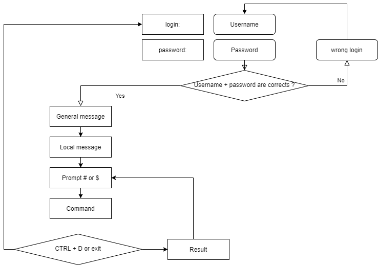

Introduction to the Linux Operating System¶
In this chapter you will learn about GNU/Linux distributions.
Objectives: In this chapter you will learn how to:
 Describe the features and possible architectures of an operating system.
Describe the features and possible architectures of an operating system.
Recount the history of UNIX and GNU/Linux.
Choose the right Linux distribution for your needs.
Explain the philosophy of Free and Open-source Software.
Discover the usefulness of the shell.
 generalities, linux, distributions
generalities, linux, distributions
Knowledge: 
Complexity:
Reading time: 10 minutes
What is an operating system?¶
Linux, UNIX, BSD, Windows, and MacOS are all operating systems.
Abstract
An operating system is a set of programs that manages the available resources of a computer.
As part of this management of resources, the operating system has to:
- Manage the physical or virtual memory.
- The physical memory is made up of the RAM bars and the processor cache memory, which are used for the execution of programs.
- The virtual memory is a location on the hard disk (the swap partition) that allows the unloading of the physical memory and the saving of the current state of the system during the electrical shutdown of the computer.
- Intercept access to peripherals. Software is rarely allowed to access hardware directly (except for graphics cards for very specific needs).
- Provide applications with proper task management. The operating system is responsible for scheduling processes to occupy the processor.
- Protect files from unauthorized access.
- Collect information about programs in use or in progress.

Generalities UNIX - GNU/Linux¶
History¶
UNIX¶
-
1964 — 1968: MULTICS (MULTiplexed Information and Computing Service) is developed for MIT, Bell Labs (AT&T) and General Electric.
-
1969 — 1971: After the withdrawal of Bell (1969) and then General Electric from the project, two developers, Ken Thompson and Dennis Ritchie (joined later by Brian Kernighan), judging MULTICS to be too complex, begin development of UNIX (UNiplexed Information and Computing Service). While it was originally created in Assembly language, the creators of UNIX eventually develop the B language and then the C language (1971) and completely rewrite UNIX. As it was developed in 1970, the reference (epoch) date for the start of time of UNIX/Linux systems is set at January 01, 1970.
The C language remains one of the most popular programming languages today. A low-level language, close to the hardware, it allows the adaptation of the operating system to any machine architecture having a C compiler.
UNIX is an open and evolving operating system that has played a major role in the history of computing. It forms the basis for many other systems such as Linux, BSD, MacOS, and more.
UNIX is still relevant today (HP-UX, AIX, Solaris, etc.).
GNU Project¶
-
1984: Richard Matthew Stallman launched the GNU (GNU's Not Unix) Project, which aims to establish a free and open Unix system, in which the more important tools are: gcc compiler, bash shell, Emacs editor and so on. GNU is a Unix-like operating system. The development of GNU, started in January 1984, is known as the GNU Project. Many of the programs in GNU are released under the auspices of the GNU Project; those we call GNU packages.
-
1990: GNU's own kernel, the GNU Hurd, was started in 1990 (before Linux was started).
MINIX¶
- 1987: Andrew S. Tanenbaum develops MINIX, a simplified UNIX, to teach operating systems in a simple way. Mr. Tanenbaum makes the source code of his operating system available.
Linux¶
-
1991: A Finnish student, Linus Torvalds, creates an operating system that runs on his personal computer and names it Linux. He publishes his first version, called 0.02, on the Usenet discussion forum, and other developers help him improve his system. The term Linux is a play on words between the founder's first name, Linus, and UNIX.
-
1993: The Debian distribution is created. Debian is a non-commercial, community-based distribution. Originally developed for use on servers, it is well-suited for this role; however it is a universal system, usable on a personal computer as well. Debian forms the basis for many other distributions, such as Mint or Ubuntu.
-
1994: The commercial distribution Red Hat is created by the company Red Hat, which is today the leading distributor of the GNU/Linux operating system. Red Hat supports the community version Fedora and until recently the free distribution CentOS.
-
1997: The KDE desktop environment is created. It is based on the Qt component library and the C++ development language.
-
1999: The GNOME desktop environment is created. It is based on the GTK+ component library.
-
2002: The Arch distribution is created. Its distinctive is that it offers rolling release (continuous update).
-
2004: Ubuntu is created by the Canonical company (Mark Shuttleworth). It is based on Debian but includes free and proprietary software.
-
2021: Rocky Linux is created, based on Red Hat distribution.
Info
Dispute over the name: although people are accustomed to calling the Linux operating system verbally, Linux is strictly a kernel. We must not forget the development and contribution of the GNU project to the open source cause, so! I prefer to call it the GNU/Linux operating system.
Market share¶
Despite its prevalence, Linux remains relatively unknown by the general public. Linux is hidden within smartphones, televisions, internet boxes, etc. Almost 70% of the websites in the world are hosted on a Linux or UNIX server!
Linux equips about 3% of personal computers but more than 82% of smartphones. The Android operating system, for example, uses a Linux kernel.
Linux equips 100% of the top 500 supercomputers since 2018. A supercomputer is a computer designed to achieve the highest possible performance with the techniques known at the time of its design, especially with regard to computing speed.
Architectural design¶
- The kernel is the first software component.
- It is the heart of the Linux system.
- It manages the hardware resources of the system.
- The other software components must go through it to access the hardware.
- The shell is a utility that interprets user commands and ensures their execution.
- Main shells: Bourne shell, C shell, Korn shell and Bourne-Again shell (bash).
- Applications are user programs including but not limited to:
- Internet browsers
- Word processors
- Spreadsheets
Multi-task¶
Linux belongs to the family of time-sharing operating systems. It divides processing time between several programs, switching from one to another in a transparent way for the user. This implies:
- Simultaneous execution of several programs.
- Distribution of CPU time by the scheduler.
- Reduction of problems caused by a failed application.
- Reduced performance in the event of too many programs running.
Multi-user¶
The purpose of MULTICS was to allow several users to work from several terminals (screen and keyboard) from a single computer (very expensive at the time). Linux, inspired by this operating system, kept this ability to work with several users simultaneously and independently, each one having their own user account with memory space and access rights to files and software.
Multi-processor¶
Linux is able to work with multi-processor computers or with multi-core processors.
Multi-platform¶
Linux is written in a high-level language that can be adapted to different types of platforms during compilation. This allows it to run on:
- Home computers (PC and laptop)
- Servers (data and applications)
- Portable computers (smartphones and tablets)
- Embedded systems (car computers)
- Active network elements (routers and switches)
- Household appliances (TVs and refrigerators)
Open¶
Linux is based on recognized standards such as POSIX, TCP/IP, NFS, and Samba, which allow it to share data and services with other application systems.
The UNIX/Linux Philosophy¶
- Treat everything as a file.
- Value portability.
- Do one thing and do it well.
- KISS: Keep It Simple Stupid.
- "UNIX is basically a simple operating system, but you have to be a genius to understand the simplicity." (Dennis Ritchie)
- "Unix is user-friendly. It just isn't promiscuous about which users it's friendly with." (Steven King)
The GNU/Linux distributions¶
A Linux distribution is a consistent set of software assembled around the Linux kernel, ready to be installed along with the necessary components to manage itself (installation, removal, configuration). There are associative or community distributions (Debian, Rocky) and commercial distributions (Red Hat, Ubuntu).
Each distribution offers one or more desktop environments, and provides a set of pre-installed software and a library of additional software. Configuration options (kernel or services options for example) are specific to each distribution.
This principle allows distributions to be geared to beginners (Ubuntu, Linux Mint...) or fully customizable for advanced users (Gentoo, Arch); distributions can also be more adept with servers (Debian, Red Hat) or workstations (Fedora).
Desktop environments¶
There are many graphic environments such as GNOME, KDE, LXDE, XFCE, etc. There is something for everyone, and their ergonomics hold their own against Microsoft or Apple systems.
So why is there so little enthusiasm for Linux, when this system is practically virus free? Could it be because so many editors (Adobe) and manufacturers (Nvidia) do not play the free game and do not provide a version of their software or drivers for GNU/Linux? Perhaps it's fear of change, or the difficulty of finding where to buy a Linux computer, or too few games distributed under Linux. That last excuse at least shouldn't be true for long, with the advent of the game engine Steam for Linux.

The GNOME 3 desktop environment no longer uses the concept of desktop but that of GNOME Shell (not to be confused with the command line shell). It serves as a desktop, a dashboard, a notification area and a window selector. The GNOME desktop environment is based on the GTK+ component library.

The KDE desktop environment is based on the Qt component library. It is traditionally recommended for users familiar with a Windows environment.
Free / Open Source¶
A user of a Microsoft or Mac operating system must purchase a license to use the operating system. This license has a cost, although it is usually transparent (the price of the license is included in the price of the computer).
In the GNU/Linux world, the Free Software movement provides mostly free distributions.
Free does not mean free!
Open Source: the source code is available, so it is possible to consult and modify it under certain conditions.
A free software is necessarily open-source, but the opposite is not true since open-source software is distinct from the freedom offered by the GPL license.
GNU GPL (GNU General Public License)¶
The GPL guarantees the author of a software its intellectual property, but allows modification, redistribution or resale of software by third parties, provided that the source code is included with the software. The GPL is the license that came out of the GNU (GNU is Not UNIX) project, which was instrumental in creating Linux.
It implies:
- The freedom to run the program, for any purpose.
- The freedom to study how the program works and adapt it to your needs.
- The freedom to redistribute copies.
- The freedom to improve the program, and publish those improvements for the benefit of the whole community.
On the other hand, even products licensed under the GPL can have a cost. This is not for the product itself, but the guarantee that a team of developers will continue to work on it to make it evolve and troubleshoot errors, or even provide support to users.
Areas of use¶
A Linux distribution excels for:
- Servers: HTTP, email, groupware, file sharing, etc.
- Security: Gateway, firewall, router, proxy, etc.
- Central computers: Banks, insurance, industry, etc.
- Embedded systems: Routers, Internet boxes, SmartTVs, etc.
Linux is a suitable choice for hosting databases or websites, or as a mail server, DNS or firewall. In short, Linux can do just about anything, which explains the quantity of specific distributions.
Shell¶
Generalities¶
The shell, known as command interface, allows users to send commands to the operating system. It is less visible today since the implementation of graphical interfaces, but remains a privileged means on Linux systems which do not all have graphical interfaces and whose services do not always have a setting interface.
It offers a real programming language including classical structures (loops, alternatives) and common constituents (variables, passing of parameters, and sub-programs). It allows the creation of scripts to automate certain actions (backups, creation of users, system monitoring, etc.).
There are several types of shells available and configurable on a platform or according to the user's preference. A few examples include:
- sh, the POSIX standard shell
- csh, command-oriented shell in C
- bash, Bourne-Again Shell, Linux shell
Functionalities¶
- Command execution (checks the command given and executes it).
- Input/Output redirection (returns data to a file instead of writing it on the screen).
- Connection process (manages the user's connection).
- Interpreted programming language (allowing the creation of scripts).
- Environment variables (access to information specific to the system during operation).
Principle¶

Check your Knowledge¶
An operating system is a set of programs for managing the available resources of a computer:
- True
- False
The operating system is necessary to:
- Manage physical and virtual memory
- Allow direct access to peripherals
- Subcontract the management of tasks to the processor
- Collect information about the programs used or in use
Among these personalities, which ones participated in the development of UNIX:
- Linus Torvalds
- Ken Thompson
- Lionel Richie
- Brian Kernighan
- Andrew Stuart Tanenbaum
The original nationality of Linus Torvalds, creator of the Linux kernel, is:
- Swedish
- Finnish
- Norwegian
- Flemish
- French
Which of the following distributions is the oldest:
- Debian
- Slackware
- Red Hat
- Arch
Is the Linux kernel:
- Multi-tasking
- Multi-user
- Multi-processor
- Multi-core
- Cross-platform
- Open
Is free software necessarily open-source?
- True
- False
Is open-source software necessarily free?
- True
- False
Which of the following is not a shell:
- Jason
- Jason-Bourne shell (jbsh)
- Bourne-Again shell (bash)
- C shell (csh)
- Korn shell (ksh)